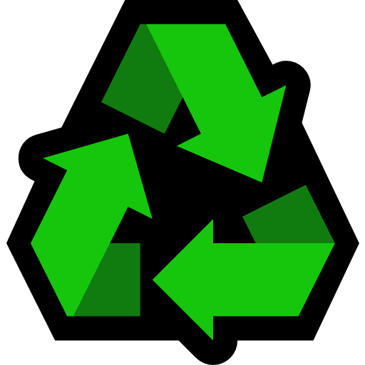

Emoji Recycling Center
Upgrades
Name
Value
Next Value
Buy
Tool Strength
Buy
Tool Size
Buy
Opening Size
Buy
Help
Import
Export
Save
Reset
SFX
Welcome to the Emoji Recycling Center!
Select an emoji in the map to begin the recycling process. You can select a different emoji at any time!
Use your recycling tool (via your mouse or finger) to disassemble your selected emoji.
If you get stuck on a mobile device, touching with two fingers will reset the zoom.
As you collect pixels from the emoji, you will be able to increase your recycling efficiency.
Black pixels allow you to purchase upgrades.
Colored pixels increase your strength against other colors.
Red improves green strength.
Green improves blue strength.
Blue improves red strength.
Try and recycle all 758 emojis!
Close
Are you sure you want to reset?
Yes
No
Import
Close
Close